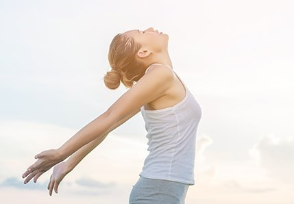
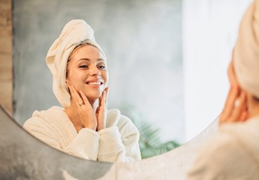

- Главная/
- Статьи и новости/
- Зачем здоровому человеку санаторий
Есть стереотип, что отдых в санатории подходит только пожилым или тем, у кого есть проблемы со здоровьем. ТАСС совместно с "РЖД- ЗДОРОВЬЕ" рассказывает, для чего санаторное лечение здоровому человеку.
По-настоящему расслабиться
Среди жителей больших городов распространены стрессы, депрессии и синдром хронической усталости. В отпуске переключиться на другой ритм жизни сложно: будь то экскурсионная поездка по Европе или "пакетный" тур на море, где отдыхающего сразу же пытаются занять разнообразными мероприятиями - от отельной анимации до шопинга. Порой после такого отдыха хочется взять еще пару дней передышки.
Другое дело санаторий: стандартная путевка рассчитана на две-три недели, отдыхающему рекомендуется соблюдать определенный режим дня, дозировать активность и чередовать ее виды. За это время можно действительно восстановить силы, выспаться, улучшить самочувствие и вернуться в полноценную рабочую форму.
Каждый день в санатории - это полезная вкусная еда, прогулки на свежем воздухе, лечебные процедуры, единение с природой и возможность никуда не спешить и не суетиться. Такое времяпрепровождение благотворно влияет на человека, привыкшего к воздействию негативных факторов: ненормированный рабочий день, стресс и плохая экология.
Сберечь здоровье
Даже здоровым людям нужно заботиться об организме, чтобы он работал без сбоев. Один из способов повысить иммунитет и провести профилактику болезней - регулярно восстанавливать силы на специализированных курортах. Кроме процедур, терапевтический эффект оказывают сразу несколько факторов: природные лечебные факторы, режим дня, диетотерапия, двигательная активность. После такого отпуска становится гораздо легче приобрести полезные привычки. Однако безупречное здоровье - это редкость. Даже когда у пациента нет конкретных жалоб, при осмотре врач все же может выявить отклонения, характерные для определенного возраста и образа жизни - например, проблемы с опорно-двигательным аппаратом или сердечно-сосудистой системой. Игнорировать такие симптомы может быть чревато неприятностями.
Санаторий - место, где вам помогут предотвратить развитие болезней на том этапе, когда они еще не приносят ощутимого вреда. Здесь можно пройти диагностику и лечение в спокойном режиме, не выгадывая время от повседневных дел. На скрининговое обследование ("мини-чекап") уходит всего один день: в него входит общий анализ крови, общий анализ мочи, ЭКГ, УЗИ внутренних органов и консультация терапевта, возможно также провести консультацию со стоматологом или другим узкопрофильным специалистом. В санатории "Волжские дали" до конца 2018 года такое обследование проводится со скидкой 10%, в подарок пациент получает консультацию косметолога. Кстати, заботясь о профилактике заболеваний, администрация санатория предлагает в перерывах между исследованиями и в ожидании их результатов получить в спа-центре санатория любую косметическую процедуру также со скидкой 10%.
Если же у отдыхающего имеются хронические заболевания, то санаторно-курортное лечение позволит в разы уменьшить число их обострений и повысить трудоспособность.
Благоприятно влияет на здоровье и само пребывание в экологически чистых районах, где находятся санатории. Чистый воздух, мягкий климат, целебные воды и грязи благотворно влияют на функции организма. Минеральные воды (ванны и питьевое лечение) оказывают мощное оздоравливающее воздействие, которое продолжается еще длительное время после отъезда из санатория.
Улучшить внешний вид
Санаторный ритм жизни помогает не только поправить здоровье, но и сбросить лишний вес и преобразиться. На курортах сети "РЖД-ЗДОРОВЬЕ" отдыхающим предлагается трехразовое питание по системе шведский стол с большим выбором свежих фруктов, овощей, салатов и полезных каш. В санаториях есть все возможности, чтобы поддерживать физическую активность: тренажерный зал с фитобаром, зал для занятий йогой, крытый бассейн с гидромассажем, пляжный волейбол, теннисные корты - закрытые и на открытом воздухе - и другие спортивные площадки.
Можно взять напрокат велосипед, самокат, ролики, палки для скандинавской ходьбы, а зимой - лыжи и санки.
Улучшить состояние кожи позволяют такие популярные способы, как финская сауна, инфракрасная сауна, русская баня и массаж. Кроме этого, санатории предлагают большой выбор современных косметологических услуг. Озонотерапия улучшает цвет и структуру кожи, избавляет от излишних локальных жировых отложений, постакне и мимических морщин. Комплекс спа-процедур с коллагенарием повышает упругость кожи, выравнивает ее цвет и тон, осветляет пигментные пятна. В спа-зоне санатория "Транссиб", помимо процедур в кедровой фитобочке, проводятся пилинги и шоколадные обертывания с дренажным эффектом.
При этом можно не откладывать и привычные уходовые ритуалы: в санаториях сети "РЖД-ЗДОРОВЬЕ" работают парикмахерские, салоны красоты и кабинеты косметолога.
С комфортом и пользой отдохнуть на море
- Здесь можно не только лечиться, но и полноценно отдыхать. В пешей доступности от санаториев - собственные оборудованные пляжи с зонтами, тентами, спасателями и медицинскими постами. На пляже санатория "Черноморье" в Сочи установлен еще и детский бассейн. А на территории санатория "Октябрьский" можно посещать собственный зоопарк каждый день.
- В санаториях, как в высококлассных отелях, есть аниматоры, караоке, бильярд, дискотеки, концерты и бесплатный Wi-Fi в номерах. При этом у каждого санатория есть свой особый колорит: в "Октябрьском" работает аквапарк с баром, а в "Черноморье" можно взять напрокат автомобиль или заказать катер.
- Кроме того, в отличие от самостоятельно организованного "дикого" отдыха, при покупке путевки в санаторий, вы заранее представляете, сколько потратите на питание, проживание и лечение: все включено в стоимость путевки.
Исследовать новые места вместе с семьей
- Санаторий - подходящий вариант для семейного отдыха. В них все устроено для удобного размещения родителей с детьми: для маленьких посетителей есть отдельные меню, игровые комнаты и детские стульчики в ресторанах и кафе. Кроватку, манеж или коляску можно взять напрокат - как и детские велосипеды, ролики маленьких размеров и даже механические машинки. Среди других развлечений - детские площадки, аниматоры и даже своя дискотека, а при наличии пляжа - надувные аттракционы.
- Также в большинстве санаториев сети "РЖД-ЗДОРОВЬЕ" предусмотрены специальные детские комнаты с воспитателями, где можно оставить малыша на время процедур. При этом каждый член семьи сможет подобрать себе тематическую оздоровительную программу: "Мужское здоровье", "Мужское долголетие", "Красивая осанка", "Гармония тела", "Детоксикация и снижение веса", "Антистресс" и др. Пенсионерам с 1 октября предоставляется круглогодичная скидка 5% на путевку в любой санаторий сети.
- Отдельный комплекс процедур разработан специально для детей. Программа "Юный гений", действующая в доме отдыха "Волжские дали", поможет школьникам снять эмоциональное напряжение, улучшить работу нервной системы и нормализовать сон. А часто болеющим детям подойдет программа "Укрепи иммунитет", включающая лечение у педиатра и стоматолога, теплолечение, ингаляции, сеансы пребывания в соляной пещере и лечебное плавание.